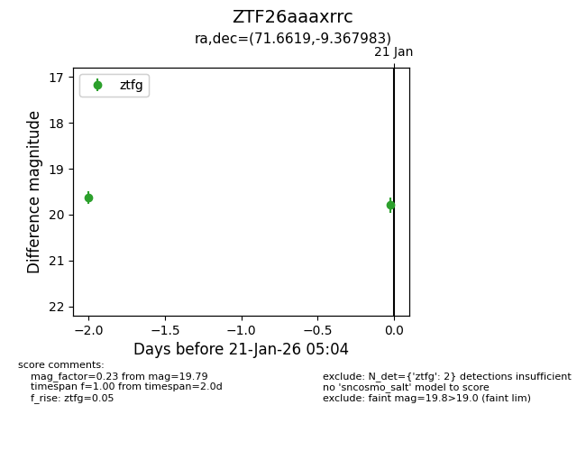
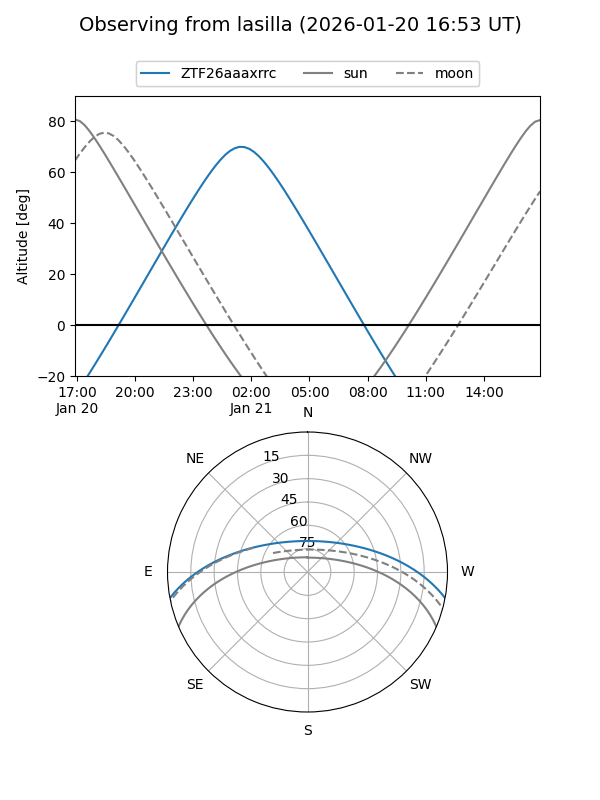
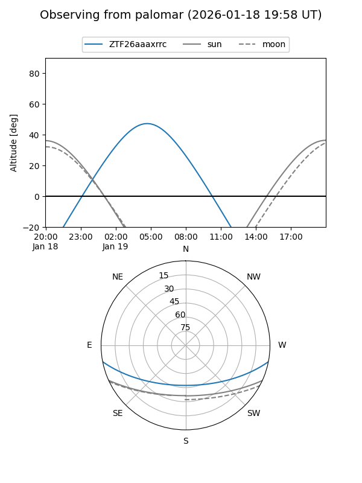

ZTF26aaaxrrc
Target ZTF26aaaxrrc at 2026-01-21 05:05
Aliases and brokers:
FINK: link
Lasair: link
ALeRCE: link
alt names
ZTF26aaaxrrc (ztf,fink_ztf)
Coordinates:
equatorial (ra, dec) = 71.6619,-9.36798
equatorial (HMS+DMS) = 04:46:38.85,-09:22:04.74
galactic (l, b) = (206.9674,-31.94333)
Flags:
Photometry:
last ztfg=19.79
2 ztfg detections
Lightcurve

Visibility


Additional plots